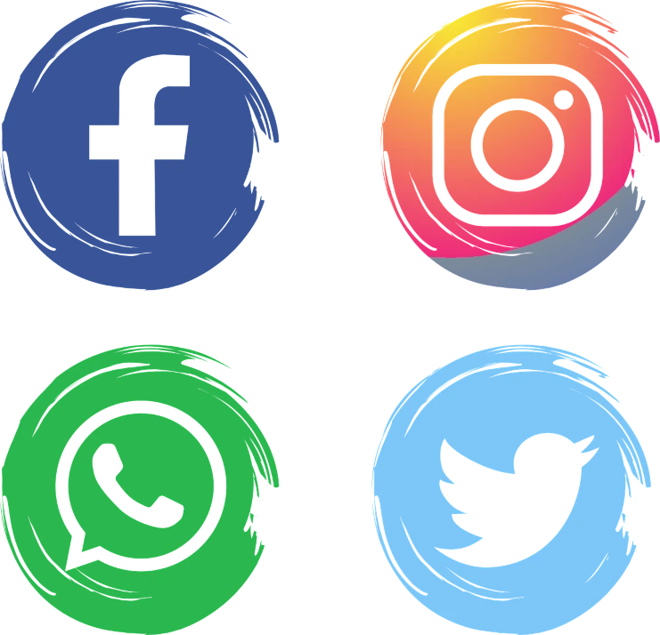

Segue lá no Instagram
Segue lá no Instagram Segue lá no YouTube
Segue lá no YouTube Segue lá no Facebook
Segue lá no Facebook Segue lá no Twitter
Segue lá no Twitter
Oi me chamo Geôvania Melo ,mais conhecida por Gel , e adoro fazer artes em crôches , faço diversos modelos de saias , vestidos , croppet, bolsas ,toucas, conjunto para casa em geral.
Como podem ver o que você estava procurando esta aqui a um clique .